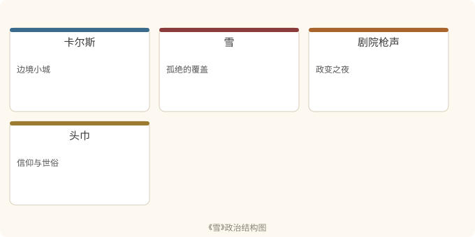

雪
一、基本信息
| 作者 | 奥尔罕·帕慕克 |
|---|---|
| 成书/出版 | 2002年（作者页 B105 口径：雪（2002）） Orhan Pamuk — Encyclopaedia Britannica（百科全书） |
| 国别/地区 | 土耳其 |
| 时代 | 现当代 · 21世纪 |
| 体裁 | 长篇小说 |
| 语言 | 土耳其语 |

《雪》政治结构图（主题·结构图）
二、创作背景
作者页（B105）：帕慕克 major_works 载'白色城堡（1985）、雪（2002）、纯真博物馆（2008）'（B105 作者页定位，详见 wodemingshan 条核对）。
题材（通说待核）：诗人'卡'（Ka）在卡尔斯市的雪中被困——政变、头巾与诗歌。
三、内容脉络
卡在边境小城卡尔斯的调查：剧院枪声、头巾女孩自焚（通说待核）。
雪的意象：'有神论者、左翼、凯末尔主义者'（通说待核）。
四、主要人物表
| 人物 | 身份 | 说明 |
|---|---|---|
| 卡（Ka） | 诗人 | 调查者（通说待核） |
| 伊佩克 | 美丽的女子 | （通说待核） |
五、主题与艺术特点
- 宗教与世俗的土耳其（通说）。
- '雪'与孤绝（通说）。
- 诗与政治（通说待核）。
六、影响与评论
- 作者页：帕慕克代表作谱系（B105 作者页口径）。
Orhan Pamuk — Encyclopaedia Britannica（百科全书） - 帕慕克2006年诺贝尔文学奖（作者级——通说待核，作者页核对）。
Orhan Pamuk — Encyclopaedia Britannica（百科全书）
七、阅读建议
难点
- 土耳其政治（凯末尔主义/伊斯兰）。
- '卡'的自反写作。
- 《雪》（上海人民出版社，通说待核）。
- 土耳其文原版（İletişim）。
先《我的名字叫红》后本作。
八、待核实
- 2002年出版（İletişim说）核对。
- 卡/伊佩克人名核对。
- 卡尔斯城市原型待核。
本页主要来源
奥尔罕·帕慕克的其他收录作品：我的名字叫红